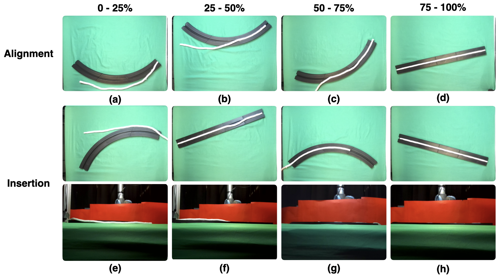

Learned Diffusion Policy (Success)
The learned diffusion policy successfully carrying out the task on the straight channel. Trial time was for a maximum of 10 minutes
The Gasket/Channel Detection box shows gasket segmentation (above) and channel segmentation (below). The Template Matching box shows the three templates for the curved, straight and trapezoid channel. The Straight/Curved Actuation box shows selection and actuation strategies for the straight and curved channels: (a) is Unidirectional insertion, (b) is Binary search insertion, and (c) is Binary+ insertion. The colors on the channels represent the locations the robot attempts to place and press the gasket into while the numbers represent the order they are placed and pressed. Endpoints are green, midpoints are pink, half-points are blue and the quartile-points are cyan. The arrows indicate the direction(s) of the slide(s). For the trapezoid channel, we treat each segment of the trapezoid as an instance of the straight channel. In the unidirectional approach (d) we process each segment in a counterclockwise manner, starting at the blue segment. For hybrid and binary (e), we evaluate the blue segment, then the cyan segments, and finally the red segment. The learned policy proceeds directly from the initial state to actuation (f). The Final State box shows the final assembled gasket.
In Gasket Assembly, a deformable gasket must be aligned and pressed into a narrow channel. This task is common for sealing surfaces in the manufacturing of automobiles, appliances, electronics, and other products. Gasket Assembly is a long-horizon, high-precision task and the gasket must align with the channel and be fully pressed in to achieve a secure fit. To compare approaches, we present 4 methods for Gasket Assembly: one policy from deep imitation learning and three procedural algorithms. We evaluate these methods with 100 physical trials. Results suggest that the Binary+ algorithm succeeds in 10/10 on the straight channel whereas the learned policy based on 250 human teleoperated demonstrations succeeds in 8/10 trials and is significantly slower.
We present three channel types: open straight, open curved and closed trapezoid. See the link at page top for CAD files.
Each channel is shown here with a gasket fully inserted. The straight channel (A) and the curved channel (B) are both open-ended channels whereas the trapezoid channel (C) is closed. This means that for all channels, the gasket endpoints (g0, g1) and channel endpoints (c0, c1) lie nearly on top of each other, but in the trapezoid case, c0 and c1 also lie nearly on top of each other
We carry out 100 physical trials: 10 for the learned diffusion policy on the straight channel, 10 for each procedural algorithm on each channel: straight, curved and trapezoid.
Alignment Results and Insertion Results for all four approaches: learned diffusion mode, unidirectional, binary search and Binary+.
The learned diffusion policy successfully carrying out the task on the straight channel. Trial time was for a maximum of 10 minutes
The learned diffusion policy failing to complete the task on the straight channel. Trial time was for a maximum of 10 minutes
The unidirectional algorithm successfully carrying out the task on the straight channel. Trial time was for a maximum of 3 minutes 30 seconds.
The unidirectional algorithm failing to complete the task on the straight channel. Trial time was for a maximum of 3 minutes 30 seconds.
The binary search algorithm successfully completes the task on the curved channel. Trial time was for a maximum of 3 minutes 30 seconds.
Human demonstrations are collected as follows:
After the robot execution has terminated, a human judge visually rates performance into one of four alignments categories, as follows:
Similarly, a human judge visually rates performance into one of four insertion categories, as follows:
Figure 4 shows qualitative results from the trials of the three analytical algorithms in increasing order of success.

Fig. 4: Evaluation Metric Examples. We provide examples for all four categories of the alignment and insertion evaluation metrics discussed in Section V-D. We show the final gasket and channel states after the robot attempts gasket assembly. For alignment we only consider the view from the overhead camera to determine alignment between the gasket and channel. To determine the snug fit of the insertion, we consult both the overhead view (top row) and the front view (bottom row), because (f), for example, shows how a gasket that is aligned with the channel can have poor insertion.
@inproceedings{gasketassembly2024,
author = {Adebola, Simeon* and Sadjadpour, Tara* and El-Refai, Karim* and Panitch, Will and Ma, Zehan
and Lin, Roy and Qiu, Tianshuang and Ganti, Shreya and Le, Charlotte and Drake, Jaimyn and Goldberg, Ken},
title = {Automating Deformable Gasket Assembly},
journal = {CASE},
year = {2024},
}